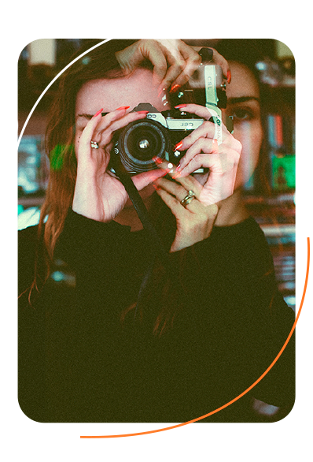

About me
Hello there! My name is Maryam Moliner and I am a professional wildlife photographer and photography instructor based in Scotland. I have been freelancing in the industry since 2011.
Wildlife photography has allowed me to capture images of animals all over the world, see my portfolio to find out more.
I am also launching my own photography workshops and classes in the very near future. Stay posted for more information in the upcoming weeks. I am looking forward to working together.
